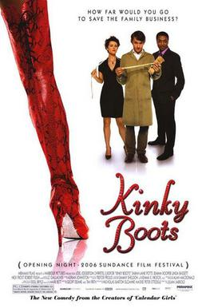

Julian Jarrold
2005
107 minutes
TITLE: Kinky Boots TEXT PLACEHOLDER 074
This is an awkward film (and later a musical) made for an audience that is drag-curious but needs enough ambiguity so that it's likely or at least possible that the drag-person who will be wearing the boots is not actually full-on gay. They are compelled by their nature to cross-dress and there is an expectation that this compulsion will be expected, but for some viewers homosexuality would be a bridge too far.
You were a bit of a drag culture early adopter, at least as a straight fan--back in the days when it veered more into the grotesque and often extremely "politically incorrect". You were a bit amazed in particular when feminist straight women started becoming interested, politely suggesting that they may wish to brace themselves for some misogyny and other rough around the edges humor that pervaded in all-male environments, even in gay ones. A lot of women would forget that gay men are still men and not some sort of neutered "honorary women". Most of the drag shows you had been to at that point had some pretty raunchy humor that would be otherwise frowned-upon, to say the least. Most of the drag shows you went to at least would feature crude jokes about vaginas in general being disgusting and smelling like fish and having an unpleasant appearance and other topics of discussion that most progressive women wouldn't tolerate from straight men.
One thing this film got right about the early days: a lot of the early drag queens you knew, at least, were the last people you wanted to fuck with. They tended to be rather large and at the very least extremely tough and scrappy back in those days. You weren't close friends with any of these early queens, but several of them were friends of friends, and you definitely got quite an education in talking to them and being around them whenever you would visit their spaces.
Eventually a lot of the rough edges got sanded off (for better or for worse) and a wider audience became appreciative of "female impersonation". The language got sanitized and the artform became more inclusive without losing all of its soul. You're still a fan of drag in its current elevated form, and its a bit horrifying to find it even mainstream enough to be a part of the current cultural wars.
All in all, it's easy to criticize this film but it's hard to hate it. This film is a bit milquetoast, but a lot of films like this ended up being a gateway to tolerance for your otherwise religious or conservative relatives. Even your rather roughneck Army veteran drill sergeant uncle ended up being a huge fan of Priscilla, Queen of the Desert, which dealt even more squarely with gay and trans issues, and to your amazement he prided himself on his tolerance and fandom of this movie, defending it vigorously whenever anyone was stupid enough to tease him for it.
Time to choose something different: